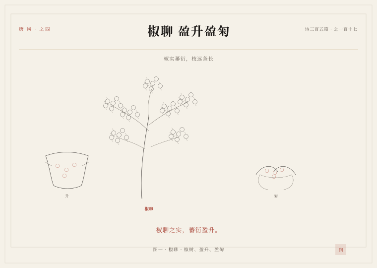
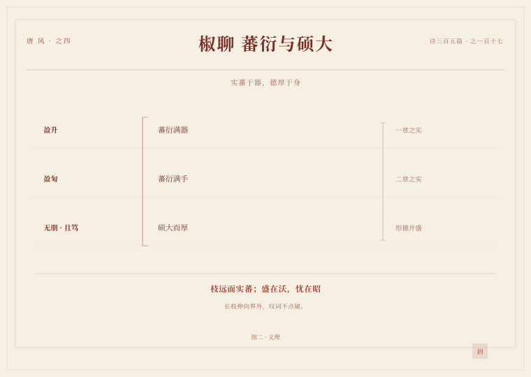

第一百十七篇 椒聊
唐风 · 之四 SJ117
朗读 · 普通话
依经文原文朗读，章次不读出；配古琴底乐，不改速、不加拖腔。全库同一音色（豆包 TTS），非播音员录制。
一 解题
诗三判：
- 谁在说：晋国旁观之君子。见曲沃桓叔一系枝叶蕃衍、子孙众多，德容盛大，知其终将并有晋国；昭公不悟，故诗人以椒为喻，叹中带刺。
- 说什么事：二章只换「升／匊」「无朋／且笃」。椒实一房而蕃衍盈升盈匊，以喻一支别宗而子孙日盛；末两句「椒聊且，远条且」，枝远而实益蕃，叹其势之长。
- 为何编在此：116《扬之水》写民欲素衣朱襮以从沃，117《椒聊》写沃之盛强蕃衍，118《绸缪》再及晋乱失时。前一篇写民心归沃，这一篇写宗支日大；由人归，写到势成。
《毛序》：「《椒聊》，刺晋昭公也。君子见沃之盛强，能修其政，知其蕃衍盛大，子孙将有晋国焉。」
朱子《诗集传》：「兴而比也。椒树似茱萸，有针刺，其实味辛而香烈。聊，语助也。朋，比也。且，叹词。远条，长枝也。○椒之蕃盛，则采之盈升矣。彼其之子，则硕大而无朋矣。椒聊且，远条且，叹其枝远而实益蕃也。此不知其所指，序亦以为沃也。」
本库的看法：《椒聊》是一首把「盛」写成「叹」的诗。
椒是兴也是比：椒之性芬香而少实，今一捄之实蕃衍满升，非其常；犹桓叔晋君之支别，今子孙众多，亦非其常。「硕大无朋」是形德并盛，「硕大且笃」是厚而不薄。
毛笺以「无朋」为平均不朋党，朱子从「无比并」读；本库从蕃盛盛大之义，而存两说于第九节。断语：椒实蕃衍，枝远条长；盛在沃，忧在昭。
先辨五事：「椒聊」是椒树，聊为语助，不是两个人名；「蕃衍」是繁盛众多，不是「繁衍」专指生育；「升」是量器，「匊」是两手所捧，二者量词不同；「无朋」不是没有朋友；「且」是叹词，不是「而且」。
二 经文
第一章
椒聊之实，蕃衍盈升。
彼其之子，硕大无朋。
椒聊且，远条且。
第二章
椒聊之实，蕃衍盈匊。
彼其之子，硕大且笃。
椒聊且，远条且。
分章：二章，章六句。
三 韵读
- 一章：升、朋，蒸部；「朋」收，盛大之象落定。
「且」为叹词，不主韵。
- 二章：匊、笃，觉部（屋觉通押）；「笃」收，厚而不薄。
「且」同上章。
- 全篇二章「椒聊且，远条且」重出，以叹词延宕，不押实韵；重句是叹，不是复沓凑韵。
读法：一章由「盈升」见其多，二章由「盈匊」见其满；量器在旁，双手在握，蕃衍一层比一层近。
四 字义与名物
- 椒聊：椒树。毛传「椒聊，椒也」；陆玑疏「聊，语助也，椒树似茱萸，有针刺，叶坚而滑泽，实辛香」。聊从语助，不从「聚成一串」另解。
- 蕃衍：繁盛众多，延绵不绝。
- 盈升：满一升；升，量器名。盈匊：满两手；匊，两手曰匊，本又作「掬」。
- 彼其之子：彼那个人；其，音记，语助。之子，是子也，毛笺谓指桓叔。
- 硕：毛笺谓壮佼好貌；朱传从「大」读。大：德美广博。
- 无朋：毛传「朋，比也」；毛笺「无朋，平均，不朋党」；朱传「朋，比也」，李氏申为「强盛而无比并」。两说并列，详见存疑。
- 笃：厚也（毛传）。
- 条：长也（毛传）；朱传「远条，长枝也」。毛从香气远长，朱从枝条远伸，详见存疑。
- 且：叹词，子余反。
名物：椒，落叶灌木或小乔木，枝有针刺，实聚生成房（捄），辛香；古人取实调味、取香。升，量器；匊，双手捧持之量，非器。
五 今译
花椒树的果实，繁盛饱满，盈满一升。那个人啊，身材高大，无可伦比。花椒树啊，枝条远长啊！
花椒树的果实，繁盛饱满，盈满两手。那个人啊，身材高大，笃厚稳重。花椒树啊，枝条远长啊！
六 章旨
- 一章：写「盈升」与「无朋」。一升之实已蕃衍满溢，喻一支别宗已盛大无比。
- 二章：写「盈匊」与「且笃」。两手所捧更见其近，笃厚则盛而能厚。
- 总收：枝远而实蕃，盛势外溢；诗人不直说将有晋国，只把椒树的长枝留在画外。
七 诗教
- 兴：以椒树结实起兴，椒实蕃衍之象先立；兴到「盈升」，子孙众多之喻自出。
- 观：观一支别宗如何由蕃衍而盛大。民已归沃（116），宗支又日蕃（117），国势之偏可见。
- 群：椒之实聚生成房，同族相结；喻桓叔一系宗族相附，与昭公之孤弱相对。
- 怨：怨在「远条且」一叹。叹枝之长，即是忧其势之成；不斥其人，刺已在叹中。
八 分寸与边界
- 不可把「椒聊」解作妇人多子的民歌。毛序、郑笺、朱传皆系于晋之沃；一读多子，刺昭公的本旨就落空。
- 不可把「之子」坐实为桓叔本人。毛笺指桓叔，朱子已疑「不知其所指」；图与说只系于沃之盛强，不替史传定死姓名。
- 不可把「无朋」读成「没有朋友」。它是无比并／不朋党之义；一读无友，诗意反成孤立之叹。
- 不可把「远条」解成远方的枝条。条为长，远条是长枝远伸、香气远长；一读远枝，比喻就落到空间位置上。
- 不可把二章「匊」写成「掬」就算定本。经文从毛诗作「匊」，「掬」是或体；今译可通两手捧，经文不改字。
九 存疑
- 诗旨：毛序「刺晋昭公」，君子见沃盛强而知其将有晋国；朱子「此不知其所指，序亦以为沃也」，已存疑辞。本库从毛序系沃，而不取「子孙将并有晋国」为定论，只作势盛之叹。
- 「无朋」：毛传「朋，比也」，毛笺申为平均、不朋党；朱传及李氏申为强盛无比并。比党与伦比，二义可通，经文「朋」字两训并存。
- 「远条」：毛传「条，长也」，郑笺谓椒气日益远长；朱传「远条，长枝也」。一为香气之长，一为枝条之长，喻体随毛朱而异。
- 「聊」字：陆玑疏以为语助；一说「聊」同「莍」，谓椒房聚生成串之貌。从语助为正，聚串之说存参。
- 年代与作者：诗系昭公之时（桓叔、庄伯之世），作者为晋国君子，姓名无考；三章与史实对应到桓叔抑或庄伯，旧说不一，不硬断。
十 跨典
- 《诗经·唐风·扬之水》：「素衣朱襮，从子于沃。」——民心已欲归沃；116
写人归，117 写宗支蕃衍，同一曲沃之势。
- 《左传·隐公五年》：「曲沃庄伯伐翼……」——沃之盛强见载于《春秋》；椒聊之叹，非无事实背景。
- 《左传·庄公十六年》：「王使虢公命曲沃伯为晋侯。」——武公卒并晋国；序所谓「子孙将有晋国」，后事如此应验。
- 《诗经·唐风·鸨羽》序：「昭公之后，大乱五世。」——椒聊正值乱阶之始；蕃衍之盛，正是五世之乱的根。
- 《国语·晋语》：桓叔「好德，晋国之众皆附焉」。——德聚民附，与「硕大且笃」相发；德厚之说，可与笃字互参。
十一 双卡与图
双卡六对：
| 椒聊（椒树，聊为语助） |
椒聊（两个人名） |
| 蕃衍（繁盛众多） |
蕃衍（专指生育） |
| 升／匊（量器／双手捧） |
升／匊（两种果品） |
| 无朋（无比并／不朋党） |
无朋（没有朋友） |
| 笃（厚） |
笃（固执） |
| 远条（长枝／远长） |
远条（远方的枝条） |

图一 · 椒聊 椒树、盈升、盈匊

图二 · 椒聊 蕃衍与硕大
读图三处：
- 椒实成房：枝上椒房成簇，枝针刺笔点出；只画房与实，不画全树的繁密叶幕。
- 升与匊：左一量器盛实，右两手捧实；器与手并见，「盈」字才有处落。
- 远条在画外：图二长枝一线伸向界外，末句叹词不加点破；枝伸出界内一格，盛势才留得住余味。